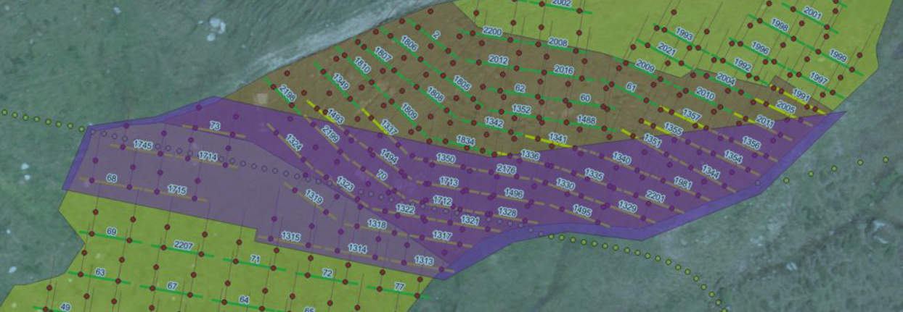

Modultische im Bereich der Wasserleitungen (PZ4) zuerst bohren
Ganz oben im Perimeter (PZ4) liegen zwei Wasserleitungen: die der Alphütte und die der KVR. Für die Bohrarbeiten müssen beide ausser Betrieb – dafür gibt es je ein oberirdisches Provisorium. Nach dem Bohren werden die definitiven Leitungen im Bereich PZ4 neu erstellt – noch in dieser Bausaison, damit die KVR-Leitung vor dem Winter wieder läuft und im Frost nichts unterbricht.
Das ist zu tun
- Vor dem Bohren: beide Wasserleitungen (Alphütte, KVR) ausser Betrieb, Provisorium oberirdisch verlegt. Im Bereich nichts bohren, solange eine Leitung in Betrieb ist.
- Bohren: die 44 violetten Tische (Karte 2D/3D, Liste) zuerst – vor den übrigen Tischen in PZ4.
- Nach dem Bohren: definitive Wasserleitungen im Bereich PZ4 neu erstellen – diese Bausaison, wegen Frost.
Quelle
Baustellenanweisung NalpSolar_51_BA_0274_A1_MT-Wasserleitung_260903 «Priorisierte Modultische Bereich Wasserleitung»,
NalpSolar AG / B. Ruede, 03.09.2026, gehört zu LI_0311_A1 (Daten 2027 PZ4) und PL_0312_A1 (Belegung 2027 PZ4).
Weitergeleitet Michele Manno 16.09.2026 → Samuel Decurtins 18.09.2026 07:48.
Lage der Tische aus den Bohrpunkten der Website (bohrpunkte_koo.json). Der genaue Verlauf der beiden Wasserleitungen
liegt nicht als Geodaten vor – nur im Übersichtsbild der Anweisung.
